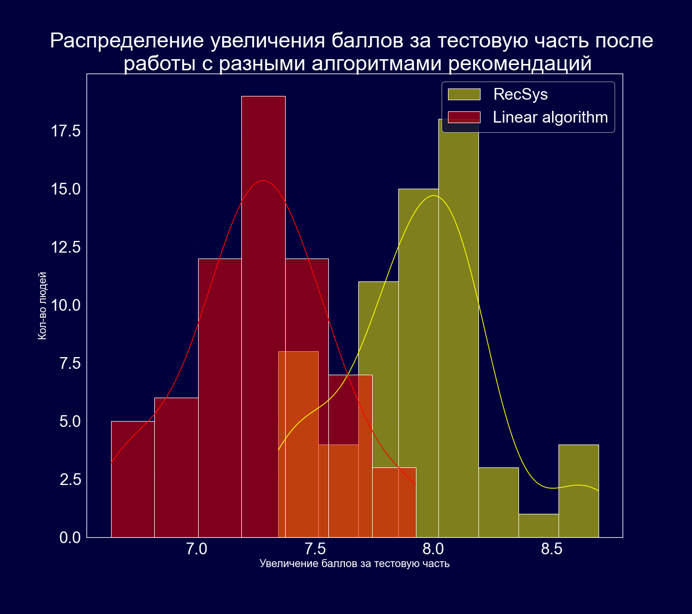
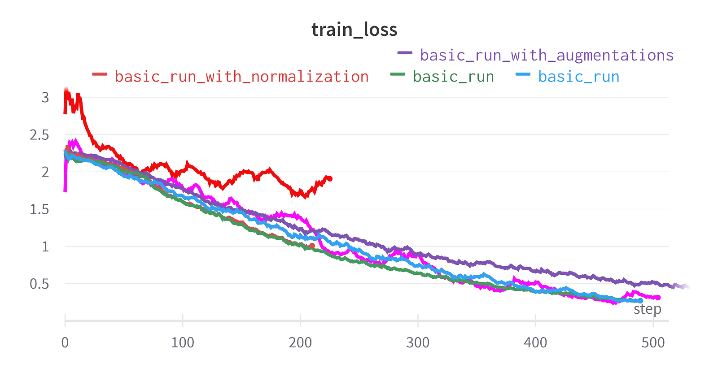

Brainster —
платформа для подготовки к экзаменам с
использованием искусственного интеллекта
МЫ ДЕЛАЕМ ПОДГОТОВКУ К ЭКЗАМЕНАМ...
эффективной
Brainster персонализирует
Вашу траекторию подготовки
доступной
Ученик из любой точки России может готовиться совершенно бесплатно
осознанной
Вы можете отслеживать свои успехи и делиться ими с друзьями
удобной
Проще один раз увидеть, чем сто раз услышать)
инновационной
Brainster использует передовые решения в области AI и ML
мобильной
Нашими сервисами можно воспользоваться в любом месте, где есть интернет.
НАША ПЛАТФОРМА СОСОТОИТ ИЗ...
DKT модель
Для того чтобы давать релевантные рекомендации нужно уметь численно оценивать ту или другую
рекомендацию. Для этого в проекте апроксимируется когнитивный рельеф ученика с помощью DKT модели.
Модель состоит из:Слои ембедингов
Мехагнизм внимания для взвешивания контекста
Линейные слои для перевода в нужную размерность
Модель состоит из:
Рекомендация заданий
Рекомендации строятся таким образом чтобы максимизировать значение целевой метрики на когнитивном
рельефе, полученном после прохождения порекомендованной образовательной траектории
применяемые алгоритмы:эвристика
имитация отжига
применяемые алгоритмы:
Генерация адаптивного контента
(в разработке)
Так как модель DKT с высокой точностью решает задачу глубокого отслеживания знаний, значит
она справляется с выделением абстрактных признаков и пониманием уровня знаний различных тем ученика.
Это значит что такой ембеддинг можно использовать в качестве ключевых данных для генерации адаптивного образовательного контента.
Планируется применять:GPT based models
Bert like models for text masking task
Планируется применять:
ТЕСТИРОВАНИЕ
Было проведено A/B тестирование. Одна из групп пользовалась простым линейным алгоритмом,
делающим обобщенные, неперсонализированные рекомендации, другая группа - рекомендательным алгоритмом на
базе модели Deep Knowledge Tracing. Участники проходили два различных теста составленных случайным образом
из заданий всего банка заданий. Интересующая метрика - разница в баллах между результами входного
и итогового тестирование. Полученные распределения визуализрованы на графике:

АРХИТЕКТУРА
Наилучший результат показала архитектура c механизмом Attention - гипотеза о важности контекста для
определения когнетивного рельефа подтвердилась. Полученные метрики на валидационной выборке:
Accuracy: 79 %
ROC-AUC: 84.5 %
График функции ошибки для модели с разными гиперпараметрами и методиками обучения приведен на графике:

Accuracy: 79 %
ROC-AUC: 84.5 %
График функции ошибки для модели с разными гиперпараметрами и методиками обучения приведен на графике: